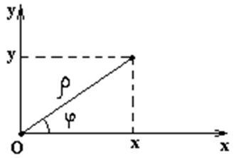

8.2 Связь полярных координат с декартовыми

Связь
декартовых координат с полярными координатами
В полярных координатах кривые второго порядка имеют
уравнения
Уравнение
кривых второго порядка в полярных координатах
,
если полюс находится в фокусе, полярная ось направлена из
фокуса к ближайшей вершине (для гиперболы этим уравнением определяется только
одна ветвь);  – фокальный параметр,
– фокальный параметр,  – эксцентриситет кривой.
– эксцентриситет кривой.
– фокальный параметр, – эксцентриситет кривой.